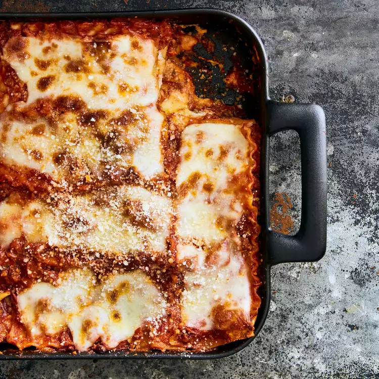

Lasagna recipe

description
Lasagna is a classic Italian dish that's beloved around the world. It's a hearty and comforting meal that's made up of
layers of tender pasta sheets, rich tomato sauce, and delicious cheese. The dish is often made with meat, such as ground
beef or sausage, but it can also be made with vegetables for a vegetarian or vegan option. Lasagna is a labor of love
that takes time and effort to prepare, but the end result is a mouthwatering masterpiece that's perfect for sharing with
friends and family. Whether enjoyed as a cozy weeknight dinner or a show-stopping holiday centerpiece, lasagna is a dish
that always satisfies.
Making lasagna can be time-consuming, but the results are well worth the wait. You'll find a detailed ingredient list
and step-by-step instructions in the recipe below.
lasagna ingredients
- 1 pound of sweet italian sausage
- 3/4 pound lean ground beef
- 1/2 cup of minced onion
- 2 garlic cloves,crushed
- 1(28 ounce)can crushed tomatoes
- 2(6.5 ounce)can of tomato sauce
- 2(6 ounce) cans of tomato paste
- 1/2 cup water
- 2 tablespoons white sugar
- 4 tablespoons chopped fresh parsley,divided
- 1 1/2 teaspoons dried basil leaves
- 1 1/2 teaspoons salt,divided, or to taste
- 1 teaspoon italian seasoning
- 1/2 teaspoon fennel seeds
- 1/4 teaspoon ground black pepper
- 12 lasagna noodles
- 16 ounces ricotta cheese
- 1 egg
- 3/4 pound mozzarella cheese,sliced
- 3/4 cup grated parmesan cheese
How to make the Lasagna
- cook sausage,ground beef,onion, and garlic in a Dutch oven over a medium heat until well brown.
Stir the crushed tomatoes,tomato sauce,tomato paste,and water.Season with sugar,2 tablespoons parsley,
basil,1 teaspoon salt,italian seasoning,fennel seeds, and pepper.
Simmer,covered,for about 1 1/2 hours, stirring occasionaly.
- Bring a large pot of lightly salted water to a boil.Cook lasagna noodles in boiling water for 8 to 10
minues.Drain noodles,and rinse with cold water.In a mixing bowl,combine ricotta cheese with egg,
remaining 2 tablespoons parsley, and 1/2 teaspoon salt.
- Preheat the oven to 375 degrees F(190 degrees C)
- To assemble,spread 1 1/2 cups of meat sauce in the bottom of a 9x13-inch baking dish.
Arrange 6 noodles lengthwise over meat sauce.Spread with 1/2 of the ricotta cheese mixture.
Top with 1/3 of the mozzarella cheese slices.Spoon 1 1/2 cups meat sauce over mozzarella cheese,and sprinkle
with 1/4 cup parmesan cheese.Repeat layers, and top with remaining mozzarella and Parmesan cheese.
Cover with foil:to prevent sticking,either spray foil with cooking spray or make sure the foil doesn't touch
the cheese.
- bake in the preheated oven for 25 minutes.Remove the foil and bake for an additional 25 minutes.
Rest lasagna for 15 minutes before serving.
Go back to the main page